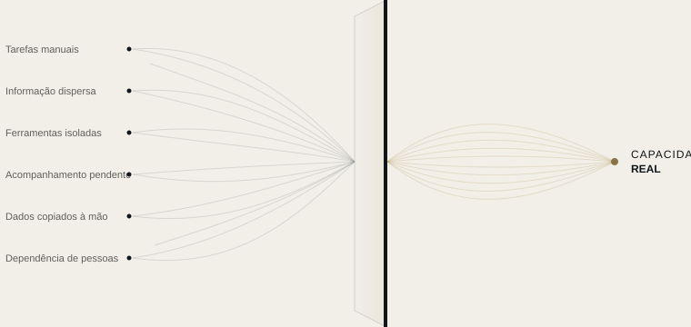

Automatização
Transformamos as tarefas repetitivas em processos automáticos, com as regras que definimos consigo.
AUTOMATIZAÇÃO DE RECURSOS
A maioria das empresas não precisa de mais ferramentas. Precisa de saber por onde lhe escapam o tempo, a informação e a atenção.
A SKURX SYSTEMS identifica onde se perde capacidade e transforma-a em sistemas de trabalho mais claros, ligados e eficientes.
O QUE FAZEMOS
Detetamos onde a sua empresa perde capacidade e libertamo-la com automatização, ferramentas ligadas entre si e inteligência artificial aplicada onde faz sentido.

OS NOSSOS SERVIÇOS
Transformamos as tarefas repetitivas em processos automáticos, com as regras que definimos consigo.
Para o que uma regra não resolve: a IA potencia a sua equipa, não a substitui.
Ligamos as suas ferramentas para que a informação passe de uma para outra sem que ninguém tenha de intervir.
COMO TRABALHAMOS
Não partimos de uma tecnologia, mas de uma pergunta: onde está a sua empresa a perder capacidade, e porquê?
Conhecemos a sua empresa por dentro, observando como a sua equipa trabalha todos os dias.
Localizamos onde se perde tempo, informação ou clientes potenciais, e porquê.
Dizemos-lhe o que mudaríamos e em que não vale a pena mexer.
Pomos tudo a funcionar, testamos consigo e ajustamos até funcionar como a sua equipa precisa.
O PRIMEIRO PASSO
Numa semana analisamos como trabalha a sua empresa e entregamos-lhe um mapa claro: o que consome capacidade, o que se pode automatizar e por que ordem. O relatório é seu, decida o que decidir.
Cada fluxo explicado em linguagem clara.
Contas, ferramentas e dados são seus.
Pode ver o que cada automatização fez e quando.
Se deixarmos de trabalhar juntos, tudo continua a ser seu.
EXEMPLOS POR SETOR
Cenários ilustrativos baseados em situações habituais. Trabalhamos com empresas de qualquer setor, em toda a Espanha.
Tudo continua a funcionar, mesmo quando já não resta ninguém no escritório.